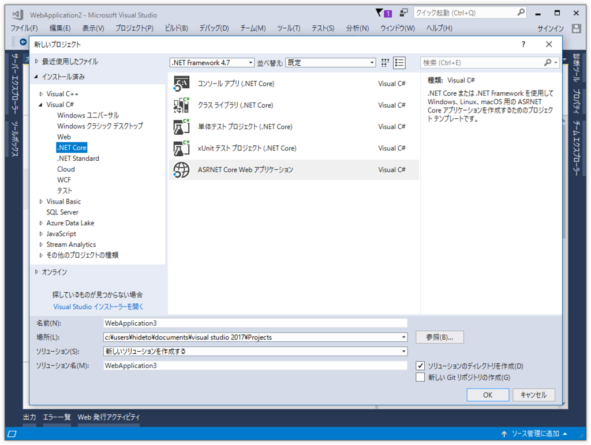
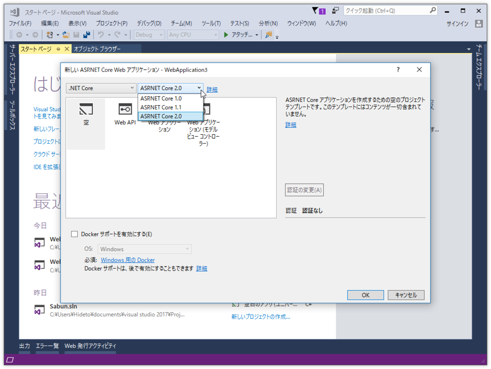
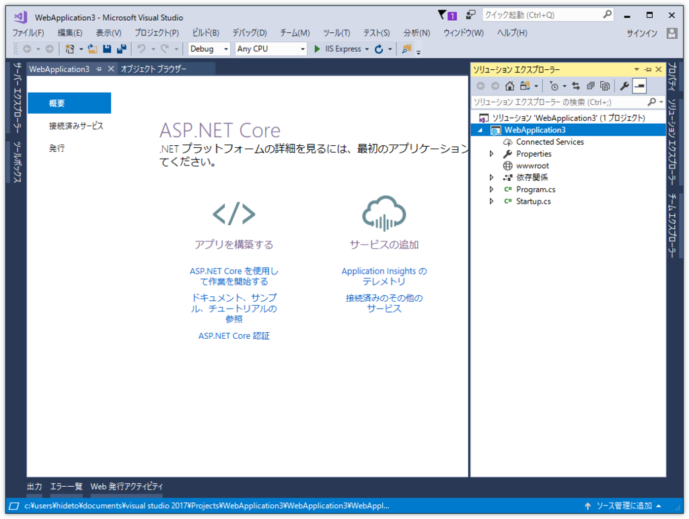
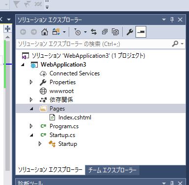
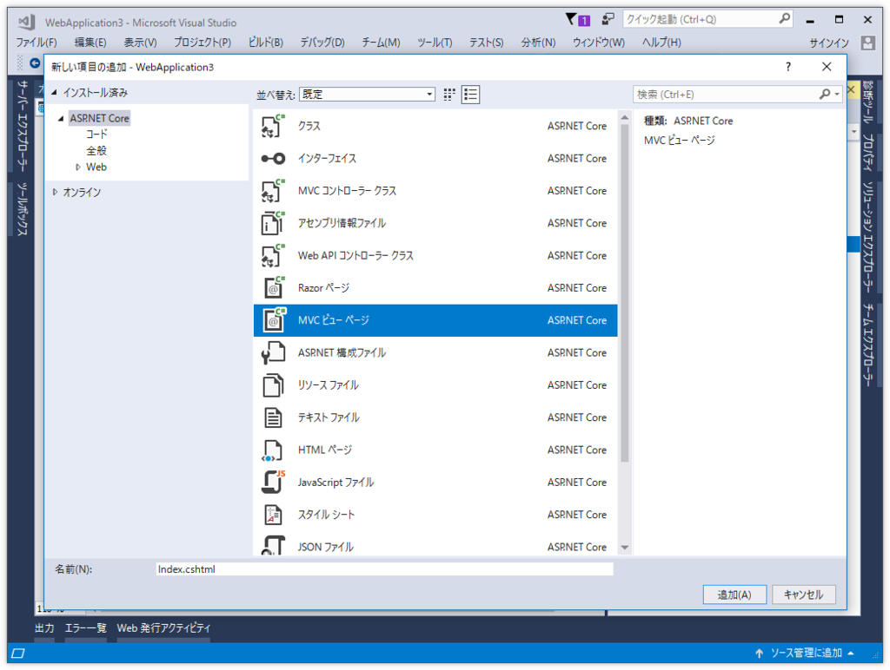
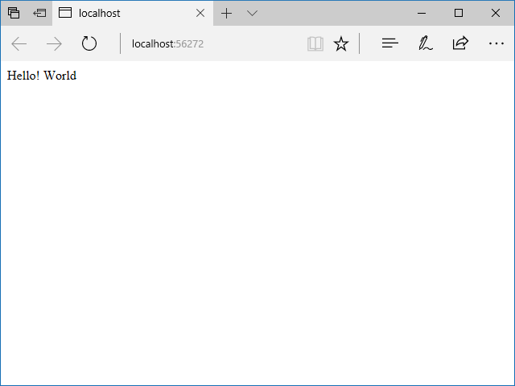
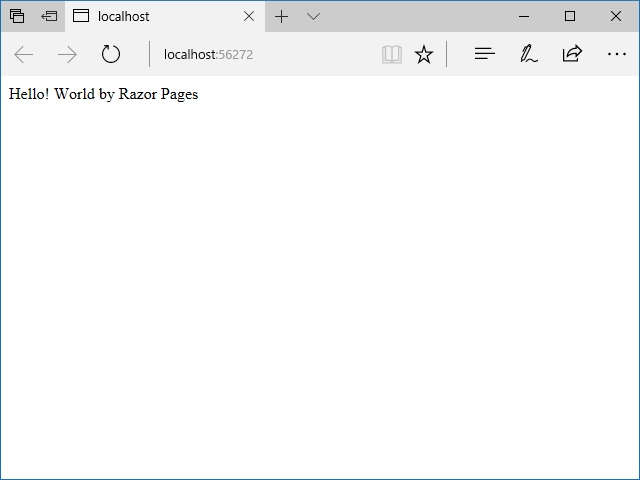
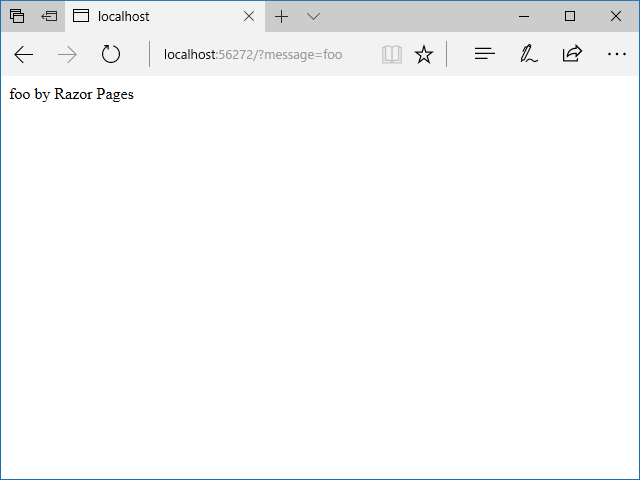
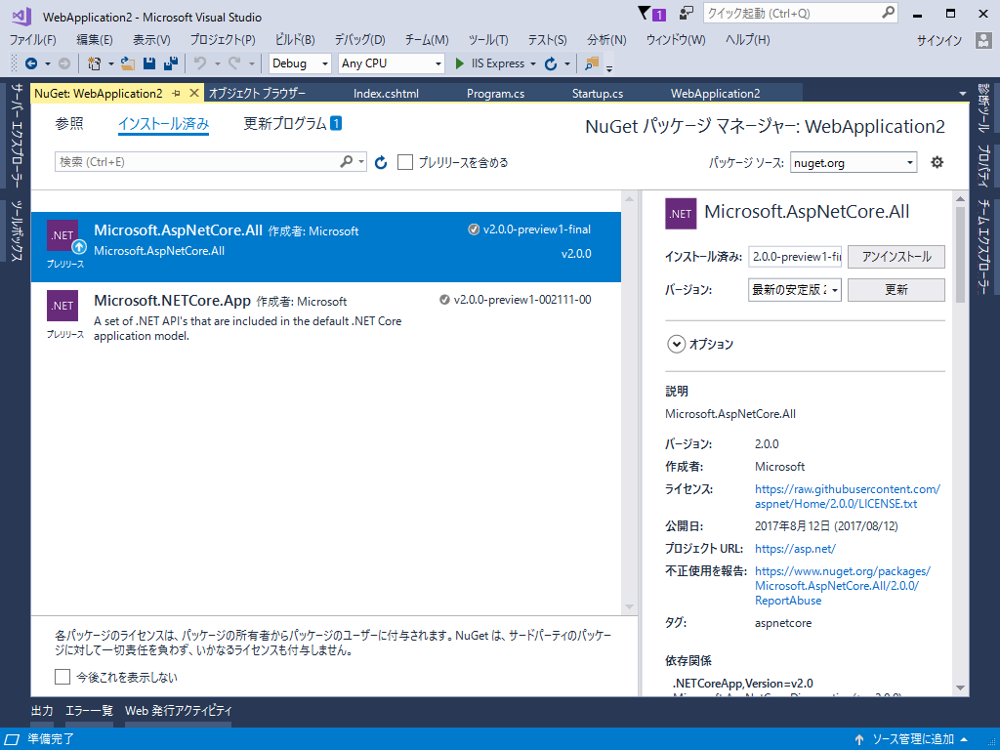
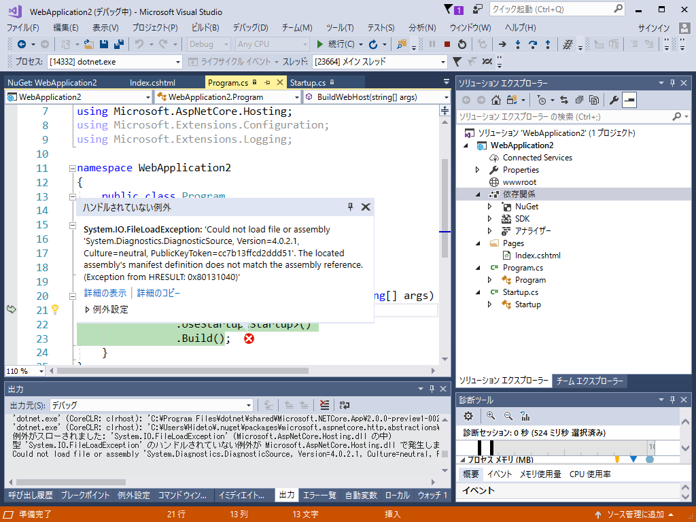

空のアプリケーションから ASP.NET Core Razor Page を始める
公開日：

前回は ASP.NET Core Razor Page をチラ見してみましたが、ひな型（サンプル）プロジェクトが割とゴツい。これでは全体的な見通しが悪くて理解が進まないし、また「Razor Pages はカンタン！」というのも伝わりにくいと思いました。
そこで、今回は Visual Studio 2017.3 を利用して“空”のアプリケーションから Razor Pages で Hello! World するまでをステップバイステップでやっていこうかなと思います。
空のアプリケーションを作成する

まず、［新しいプロジェクト］コマンドで .NET Core、ASP.NET Core Web アプリケーションを作成。フレームワークを .NET Core へ、.NET のバージョンを 2.0.0 に切り替えて、“空”のアプリケーションを作成します。

このアプリケーションには、ソリューションファイルなどを除くと
- Program.cs
- Startup.cs
- 静的ファイルを置く wwwroot フォルダー
の3つしかありません。シンプルだね！ コードも最低限で、
［F5］キーで実行すると“Hello! World”が表示されるだけです。まずはここから始めましょう。
Program.cs と Startup.cs
Program.cs は、アプリケーションを実行する際、最初に処理されます（エントリポイントってやつだな）。
using Microsoft.AspNetCore; using Microsoft.AspNetCore.Hosting;namespace WebApplication3 { public class Program { public static void Main(string[] args) { BuildWebHost(args).Run(); }
public static IWebHost BuildWebHost(string[] args) => WebHost.CreateDefaultBuilder(args) .UseStartup<Startup>() .Build(); } }
WebHost をビルドして実行しているようですが、よくわかんないし、今回はとりあえずそのままにしておいていいです。
一方、Startup.cs は初期化を担当しています。空のアプリケーションの場合はこんな感じになっています。
using Microsoft.AspNetCore.Builder; using Microsoft.AspNetCore.Hosting; using Microsoft.AspNetCore.Http; using Microsoft.Extensions.DependencyInjection; namespace WebApplication3 { public class Startup { public void ConfigureServices(IServiceCollection services) { } public void Configure(IApplicationBuilder app, IHostingEnvironment env) { if (env.IsDevelopment()) { app.UseDeveloperExceptionPage(); } app.Run(async (context) => { await context.Response.WriteAsync("Hello World!"); }); } } }
リクエストがあったらレスポンスに“Hello! World”と書いて送るだけのようです。
Razor Pages を使う
Razor Pages は MVC に含まれています。なので、まず Startup.cs で MVC を有効にします。
namespace WebApplication3 { public class Startup { // This method gets called by the runtime. Use this method to add services to the container. // For more information on how to configure your application, visit https://go.microsoft.com/fwlink/?LinkID=398940 public void ConfigureServices(IServiceCollection services) { services.AddMvc(); }// This method gets called by the runtime. Use this method to configure the HTTP request pipeline. public void Configure(IApplicationBuilder app, IHostingEnvironment env) { if (env.IsDevelopment()) { app.UseDeveloperExceptionPage(); }
// もう要らないのでコメントオフ // app.Run(async (context) => // { // await context.Response.WriteAsync("Hello World!"); // });
app.UseMvc(); } } }
これだけだと実行して何も表示されないので、ビューも追加しましょう。

まず、アプリケーションルートに Pages フォルダーを作成。Razor Pages の *.cshtml はここに保存します（設定で変更可能できるらしいけど）。

次に Pages フォルダーのコンテキストメニュー から“MVC ビュー”を追加。これは要するに *.cshtml ファイルです。“Razor ページ”でも *.cshtml を追加できますが、ビューモデルの *.cs ファイルもくっついてくるので（これはこれで便利だけど、まだお子さまには早い！）、今回は“MVC ビュー”にしておきました。
ちなみに、名前は Index.cshtml にしておきます。/ にアクセスすると、/Pages/Index.cshtml が自動で表示される仕組みになっていますので（ルーティングの規則については、また機会を改めましょう）。
内容はこんな感じ。ごちゃごちゃ書いてあるのは、［Ctrl］＋［A］して［Delete］しちゃって下さい。
@page <p>Hello! World</p>
［F5］キーで実行すると、こんな感じになるはずです。

できた＼(＾o＾)／
でも、これだけでは Razor Pages を使っている意味がないので、変数を使ってみます（文法に関しては説明しません。ググってね！ めっちゃ簡単だよ）。
@page
@{
var message = "Hello! World";
}
<p>@message by Razor Pages</p>
ページの先頭に「Razor Pages だよ！」ってことを知らせるディレクティブ @page を追加している以外は ASP.NET Web Pages（Razor）とまったく変わりません。
保存してブラウザーをリロードするとこんな感じになるでしょう。

あんまり面白くないですかね？ こうしてみますか。
@page "{message?}"
@{
var message = Request.Query["message"];
}
<p>@message by Razor Pages</p>

@pages のあとに routing constraint を書けるのは新しいかもしれません。この例では正直意味がないのですが（消してもそのまま動くしな）、モデルで void OnGet(string message) などと受け取れるので覚えておくといい感じ。
@page "{message?}"
@using Microsoft.AspNetCore.Mvc.RazorPages
@model IndexModel
@functions
{
public class IndexModel : PageModel
{
public string Message { get; private set; }
public void OnGet(string message)
{
Message = string.IsNullOrEmpty(message)
? "Hello! World"
: message;
}
}
}
<p>@Model.Message by Razor Pages</p>
もっと複雑な型データを受け取るときに役立つでしょう。ちなみに @functions の部分は *.cs ファイルに分離することもできます（NEW!）。
@page "{message?}"
@model IndexModel
<p>@Model.Message by Razor Pages</p>
ちょうど WPF や WinForm のビュー（デザイナー）＋コードビハインドみたいな感じで、スッキリしていいですね（こういうことがしたい場合は、最初から“MVC ビュー”ではなく“Razor ビュー”を追加するといいです）。
もっと詳しいことが知りたい場合は、チュートリアルページを参照してください。自分もあとでゆっくり読んでみようと思います。
おまけ

空のアプリケーションには 2 つの NuGet パッケージが含まれています。
- Microsoft.AspNetCore.All
- Microsoft.NETCore.App
初期状態ではどっちもプレビュー版で、前者のみ v2.0.0 正式版へのアップデートが提供されています。

でも、片っぽだけアップデートすると実行時にコケるみたい。もうちょっと待ちますかね。